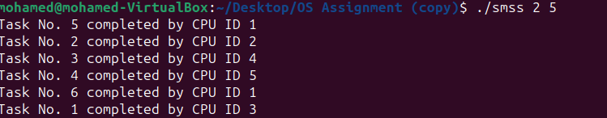
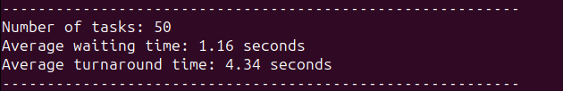
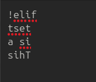
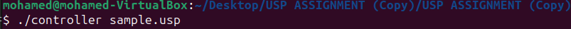
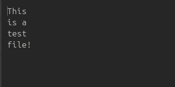

Process Synchronization
This C program simulates a multiprocessor environment by creating multiple threads, each representing a CPU-bound process. The primary objective is to handle process synchronization efficiently to prevent race conditions and ensure that processes execute in an organized manner. Each thread simulates a unique CPU process that performs computations or tasks for a random or predefined duration. The program leverages POSIX threads (Pthreads) and synchronization primitives such as mutexes and semaphores to manage critical sections and shared resources, ensuring threads do not interfere with one another. This synchronization is crucial for maintaining data consistency and avoiding deadlocks. At the end of execution, the program calculates and displays key performance metrics, including the total number of processes executed, average wait time, and average turnaround time. These results provide insight into the efficiency of the simulated CPU scheduler and the effectiveness of the synchronization mechanisms used. This project offers valuable hands-on experience in multithreading, process synchronization, and performance evaluation, reinforcing core concepts in operating systems and parallel computing.


For the source code and more details: GitHub
Reverser Program
This C program demonstrates inter-process communication (IPC) and process control by utilizing system calls exclusively to read, manipulate, and write data between a parent and child process. The program begins by reading the contents of a file using the open(), read(), and close() system calls. After successfully retrieving the file data, the parent process creates a child process using fork(). A unidirectional pipe is established between the parent and child process using the pipe() system call, enabling data transfer. The parent writes the file's contents to the pipe, and the child process, after executing exec() to load a reverser program, reads this data. The child process reverses the data and sends it back to the parent through the pipe. Upon receiving the reversed data, the parent process writes it to a new output file using open(), write(), and close(). This program emphasizes process synchronization, efficient data handling, and the application of low-level IPC techniques, all while adhering strictly to system calls without relying on standard library functions. It provides a hands-on approach to understanding the fundamentals of process management, file I/O, and inter-process communication in Linux-based systems.


